Hotcake
Heat It, Play It, Hotcake
Hotcake lets you enjoy playing music with your friends, no matter where you are. It delivers rich, 3D sound that makes it feel like you are all in the same room. Hotcake keeps everyone perfectly in sync, so you can feel magical moments. Experience immersive, unforgettable jam sessions even in your home.

Music is a part of everyday life. Some people want to truly engage and participate. Which means some people grab an instrument and begin their journey as a “bedroom musician’’.

Music Comes Alive Together
Music is never complete when played alone. As different instruments come together, the sound becomes richer and more joyful. At first, you might play alone in your room, but before long, you’ll want to play with others. You just can’t fully experience the thrill of trading rhythms and locking into a groove when you’re playing solo.

Jam sessions once meant going to a rehearsal studio — carrying heavy instruments, paying a fee, and feeling the pressure to perform perfectly. But what if you could play together from home? Hotcake offers a more relaxed and enjoyable way to connect. Play in your own space, and don’t worry if the beat slips or a note goes astray. Just let the music take over your soul.
▶︎ More Detailed Story
Heat It, Play It, Hotcake


Online Jam, Perfected Cake & Butter
Hotcake includes Cake, a modular speaker and woofer system, and Butter, a wearable device that lets you feel the music. Hotcake turns the sounds from your jam session into immersive 3D audio, making it feel like you’re all playing in the same room. Butter also sends vibrations, so you can feel the beat as you play.


The Cake
Half a World Away, Still in Sync.
Perfect timing is very important for online jam sessions. Cake makes sure there is no delay or freezing, so everything feels smooth. Cake stays connected through a wired Ethernet, delivering real-time audio no matter the distance. Each module picks up the live sound from the station via a 2.4GHz RF channel, making sure your online jam feels smooth and perfectly in sync.


The Butter
Adding Texture to Music.
What makes live music special is the way you can feel it in your body. Butter brings this feeling. It syncs haptics to the music you're playing, adding a rich layer to the sound. Also, you can switch to metronome mode to stay on beat or use the built-in mic to chat with others.


⠀⠀


Hotcake Scenario
(1) Connection with Sessions
Your Instant Band, Anytime, Anywhere
If there is no one around to jam with, just open Hotcake’s community. You can find new bandmates who share your taste in music, or start a session with a friend from your list. Missing a player? An AI musician will jump in and play along with your rhythm, so you can always enjoy a full and immersive session.
(2) New Experience with Hotcake
A Live Experience with Light, Vibration, Sound
Set up modular speakers and experience more than just sound. Cake lights up in real time, so you can visually feel your friends’ performances as they play. Pair them with Butter, which is the wearable device. Feel the rhythm and groove through haptic.
At Home, But Louder, More Fun
The best part of playing together is when everyone’s timing clicks. At this perfect moment, LED lights turn your room into a stage. When the music hits its peak, gesture motion triggers sound effects. So you can explore your jam session.
(3) Frame the Heated Moment
Return To The Heat Of The Jam
After the jam, AI automatically edits your solo parts and highlights them into a complete video. So, you can share it with your bandmates to keep the feeling going. Replay your performance and relive the spark of the session anytime.


New Expandability
Playing Together, For Everyone
Hotcake becomes a platform where everyone can enjoy jamming, without changing how you normally play. For those who are deaf or hard of hearing to feel the rhythm, Butter features music haptics make you feel the rhythm through vibrations and join the session. Enjoy an immersive playing experience anytime, anywhere with Studio Mode headphones. It is a new music life, where your personal expression becomes part of the content.
Heat It, Play It, Groove It, Melt It, Drop It,
Fade It, Link It, Hotcake


Credits
Industrial Designer, Project Lead
Woojin Jang @woojinjid
Industrial Designer
Eunhye Jang @ihaveaspirit
UX Designer
Hyeryoung Jeong @hyeryoung2
Visual Designer
Ilyeo Lee @leeilyeoo
BX Designer
Chaeeun Kim @rlaeunoia
-
Special Thanks to
Industrial Design Advisor
Hoyoung Joo @hoyoungjoo
UX Design Advisor
Seungbin Oh @_beencent
Visual Design Advisor
WORKS @works.works
Film Director
Juhyuk Choi @onemoogy
D.O.P.
Gijeong Park @poetgijeong
Gaffer
Uiyeol Yang @eui.10
Photographer
Dokyum Lee @madi_depict
Music Producer
cotoba @bandcotoba
Model
DyoN Joo @dyonjoo
Music
syhi
Performed by cotoba
Written by DyoN Joo
Lyrics by DyoN Joo
Arranged by DyoN Joo, Dafne, Hyerim, Minsuh, Marker
Played by DyoN Joo(guitar/vocal), Dafne(guitar), Hyerim(bass), Marker(drums)
-
Samsung Design Membership
2025 MEP Exhibition 〈New Formative〉
Samsung Electronics Seoul R&D Campus,
Tower A, 2nd Floor, Innovation Studio/Gallery
August 22–27, 2025
Organized by Samsung Design Membership
Sponsored by Samsung Electronics
© Samsung Design Membership 2025 All rights reserved.


Start with SPURT!
↓
🔥Click Here!🔥


지금 바로 가족과 함께 시작해보세요 ❤️
https://bibbi.app/
COMONG — 강아지와 함께 쓰는 AI 에어 멀티플라이어
삼성디자인멤버십 × IDEO 프로젝트 · Team 6
Industrial Design 정민서(PL) · UXUI 이일여 · BX 장유진 · 최완혁

01 BACKGROUND
냉방 사각지대의 반려견
가정의 냉방은 사람의 체감을 기준으로 이루어지며, 같은 공간의 반려견은 그 대상에서 빠져 있습니다.
선풍기 바람이 강아지에게 실제로 시원한지 검증하는 것에서 리서치를 시작했습니다.
강아지의 체온 조절 방식
강아지는 땀을 흘리지 않고, 혀와 발바닥으로 수분을 증발시켜 체온을 낮춥니다.
그래서 정면에서 부는 직접풍은 거의 시원하게 느껴지지 않습니다.
필요한 것은 강한 바람이 아니라, 바닥을 식히고 공기를 순환시키는 간접적인 시원함입니다.


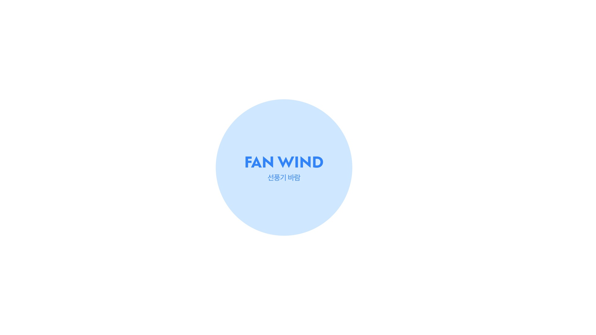
02 RESEARCH
보호자 인터뷰
이니셜·인뎁스 인터뷰에서 반려견의 바람 선호를 확인했습니다.
"직풍을 싫어해서 바람이 세면 다른 곳으로 가버려요."
"옆으로 확산되는 은은한 바람은 좋아해요."
전문가 견해
훈련사와 수의사 모두 직접풍이 강아지에게 큰 도움이 되지 않는다고 답했습니다.
직접풍은 눈을 건조하게 만들고, 기화 냉각이 되지 않는 강아지에게는 효율이 낮습니다.
강아지는 혀·배·발바닥으로 체온을 조절하며, 은은하게 확산되는 바람을 선호합니다.
환경을 찾아 이동하는 행동 특성
강아지는 헐떡임 같은 생리 반응 외에도, 더 적합한 환경을 스스로 찾아 이동하며 체온을 조절합니다.
휴식 장소를 고를 때도 열 조절과 그늘을 우선한다는 연구가 이를 뒷받침합니다.
'시원한 바닥으로 스스로 오게 만든다'는 설계 방향의 근거로 삼았습니다.
발바닥의 열 방출 구조
개의 발바닥은 모세혈관이 밀집한 열 손실 표면입니다.
바닥을 식히면 발바닥을 통해 효과적으로 체온을 낮출 수 있습니다.
이를 근거로 간접풍과 지면 냉각을 핵심 기제로 설정했습니다.


03 PAIN POINT
Problem 01 — 강아지를 위한 바람의 부재
기존 선풍기는 사람의 체감을 기준으로 설계되어 있습니다.
강아지의 신체 특성을 고려한 바람은 존재하지 않습니다.
Problem 02 — 혼자 있을 때의 시원함과 안전
보호자가 외출하면 문제는 더 커집니다.
선풍기를 켜두면 전선을 물어 생기는 감전·화재가 걱정되고, 에어컨을 켜두면 전기요금이 부담됩니다.
강아지가 혼자 있을 때 시원함과 안전을 동시에 지킬 방법이 없습니다.
Problem 03 — 함께 나누는 바람의 부재
사람과 강아지가 함께 있을 때는 바람의 세기와 방향을 매번 따로 맞춰야 합니다.
같은 공간 안에서 서로 다른 쾌적 조건을 충족하지 못합니다.
디자인 과제
사람과 반려견이 함께 있는 공간에서, 반려견에게도 안전하고 지속적인 시원함을 제공하는 것을 과제로 설정했습니다.
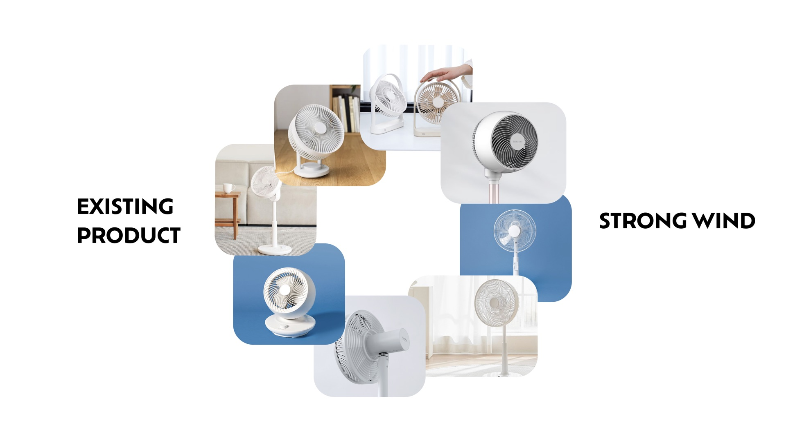


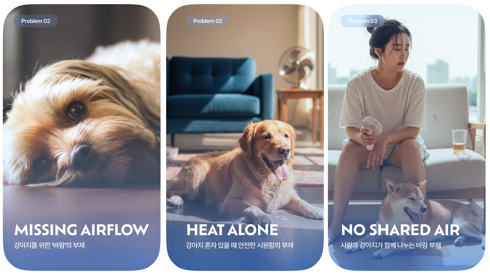

04 SOLUTION
COMONG
시원한 곳을 찾아 이동하는 강아지의 행동 특성에 기반한 AI 에어 멀티플라이어입니다.
위쪽은 사람을 위한 직접풍, 아래쪽은 강아지를 위한 은은한 바닥풍을 동시에 냅니다.
카메라와 지면 온도 센서로 강아지의 더위를 감지하고, 스스로 바람과 냉방을 조절합니다.
Stand & Ground
Stand는 사람 눈높이의 직접풍으로, 팝업 75°와 회전 90°로 330° 범위를 커버합니다.
Ground는 강아지가 머무는 바닥을 식히는 간접풍으로, 상단 흡입구에서 들어온 공기가 하단 홀로 퍼집니다.
Smart Sync · Object Detection
강아지가 자주 머무는 바닥 위치를 인식해 해당 구역만 집중 냉각합니다.
헐떡임을 감지하면 더위 반응인지 판단해 에어컨과 연동합니다.
05 SCENARIO
페르소나
직장인 유정씨(32)의 말티즈 몽이는 하루 대부분을 혼자 집에서 보냅니다.
더위에 약한 몽이는 여름이면 시원한 곳을 찾아 거실을 서성입니다.
온보딩
앱을 처음 실행하면 반려견 정보를 입력합니다.
AI가 몽이에게 맞는 바람 세기와 바닥 온도를 자동으로 추천합니다.
외출 모드
출근 시간이 되면 AI 컴패니언이 일정 패턴을 읽고 외출 모드를 제안합니다.
COMONG은 몽이가 머무는 바닥 구역을 22°C로 낮추고 은은한 순환 바람을 만듭니다.
보호자는 별도의 조작 없이 집을 나설 수 있습니다.
혼자 있는 시간
더위를 피해 거실을 서성이던 몽이는 COMONG이 만든 시원한 바닥 존으로 스스로 이동합니다.
회사에서 유정씨는 앱으로 몽이의 상태를 확인합니다.
자동 냉방 연동
퇴근 후 저녁을 준비하는 사이 몽이가 더위를 느끼기 시작합니다.
카메라 센서가 헐떡임을 포착하고, 더위 반응으로 판단해 에어컨을 켭니다.
에너지를 아끼면서 몽이에게 맞는 시원함이 유지됩니다.
동반자 모드
식사 시간에는 위쪽은 유정씨를 위한 직접풍, 아래쪽은 몽이를 위한 바닥풍이 동시에 작동합니다.
같은 공간 안에서 서로 다른 시원함이 조화를 이룹니다.
데일리 리포트
잠들기 전 유정씨는 몽이가 머문 시간과 절약된 에너지를 확인합니다.
보호자와 반려견 모두에게 안전하고 시원한 여름을 제공합니다.


06 PRODUCT & UX
눈높이 조작부
디스플레이와 작동부는 반려견의 손이 닿지 않는 사용자 눈높이에 있습니다.
제품 상단의 히든 디스플레이로 COMONG을 조작합니다.
자동 개폐 흡입구
상단 흡입구와 직접풍 팬은 오픈형 구조입니다.
카메라와 지면 온도 센서가 더위를 감지하면 흡입구가 자동으로 열립니다.
상단 흡입 · 하단 간접풍 구조
모터와 헤파 필터, 먼지 필터가 제품 상단에 위치합니다.
위에서 빨아들인 공기가 아래로 나가며 반려견 맞춤의 확장된 에어 서큘레이션을 그립니다.
오뚝이 전도 방지 구조
외출 중 발생할 수 있는 사고를 막기 위해 오뚝이 원리로 설계했습니다.
기울어져도 되돌아오며, 복귀 속도는 뎀퍼가 완화합니다.
전선 안전 설계
의료용 튜빙 계열 소재에 쓴맛을 더해 반려견이 전선을 갉는 것을 예방합니다.
유선 방식 선택
무선 서큘레이터의 최소 사용 시간은 2.7시간 수준입니다.
장시간 집을 비우는 외출 시나리오에는 부족해 유선을 택했습니다.
제품 사양
높이 135cm · 무게 12kg
구성 — 히든 디스플레이 · 카메라 · 온도 센서 · 흡입구 그릴 · 헤파 필터 · 모터 · 스탠드 블로우 그릴 · 그라운드 블로우 홀 · 뎀퍼 · 바퀴
전용 쿨매트 옵션
바닥풍의 시원함을 극대화하는 전용 쿨매트입니다.
나선형 구조로 은은한 바닥풍이 더 넓고 고르게 퍼집니다.


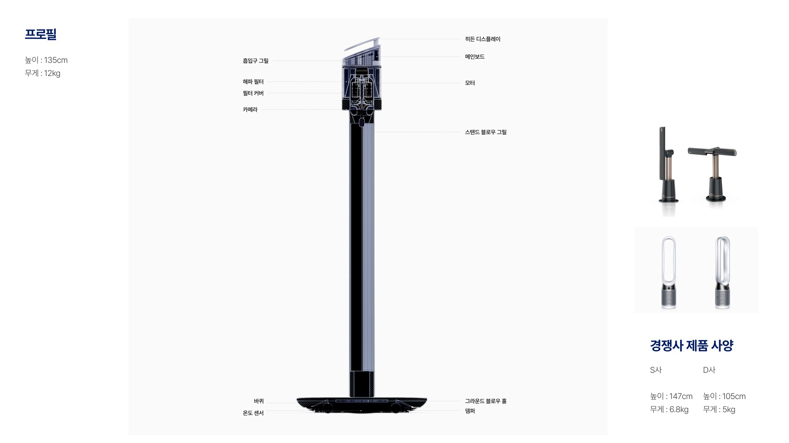
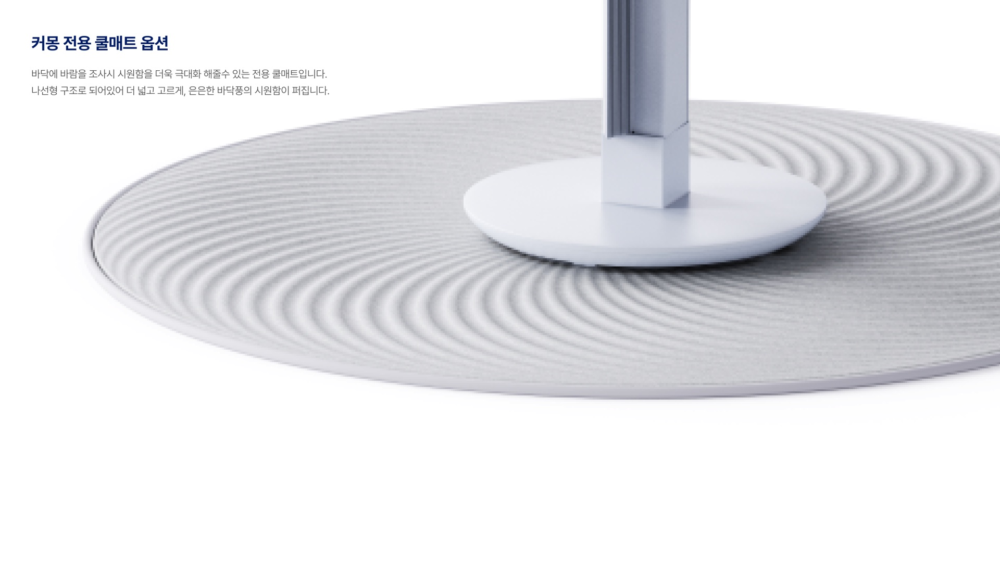
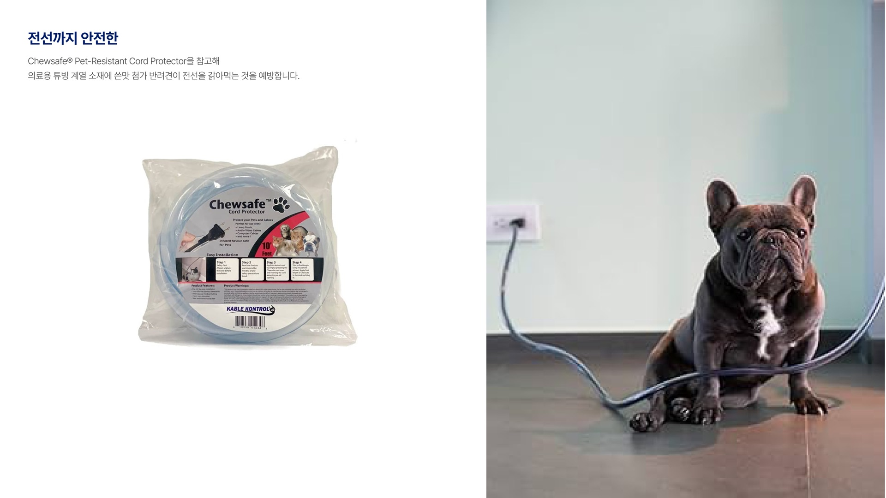
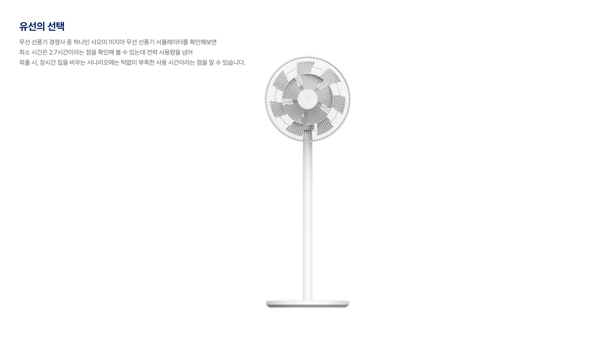
07 AI LOGIC
행동 기반 · 환경 기반 감지
행동 기반 감지는 영상 인식으로 강아지의 몸짓과 표정에서 더위를 읽습니다.
환경 기반 감지는 온도·습도·바닥 상태가 기준값을 넘는지 판단합니다.
4단계 열 스트레스 제어
환경 데이터와 행동 데이터를 함께 분석해 열 스트레스를 4단계로 분류합니다.
단계에 따라 바닥 냉각, 공기 흐름, 에어컨 연동을 자동 제어합니다.
사용 플로우
온보딩, 외출 모드, 동반자 모드 순으로 이어집니다.
사용자는 필요할 때만 전체 바람을 수동으로 조정합니다.
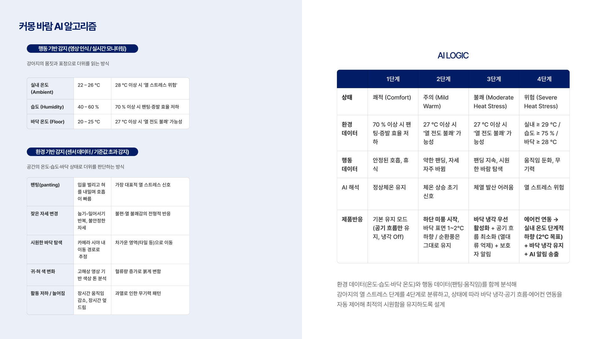
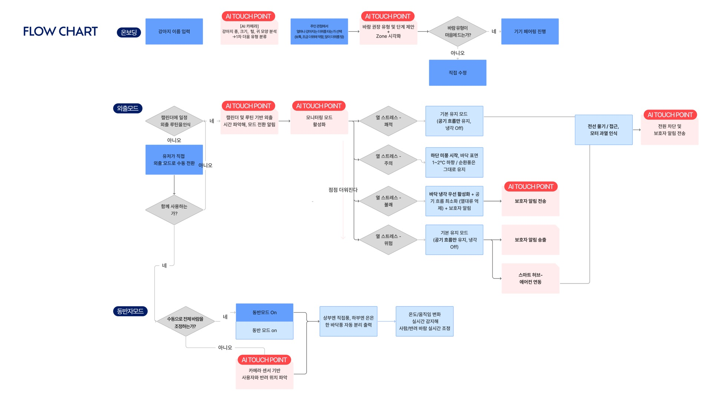
08 NEXT STEP
바닥 재질별 냉각 효율 연구
타일·마루 등 바닥 재질별 냉각 지속력과 온도 유지력을 리서치해 최적의 바닥풍 알고리즘을 찾습니다.
냉각 보조 모듈 확장
전용 냉각 매트를 보조 요소로 도입해 강아지가 더 오래 머무는 서드파티 확장 시스템으로 발전시킵니다.
사용자 검증 및 이터레이션
실제 반려가정 테스트로 강아지 반응, 보호자 신뢰, 직관성을 검증하고 피드백 이터레이션을 진행합니다.
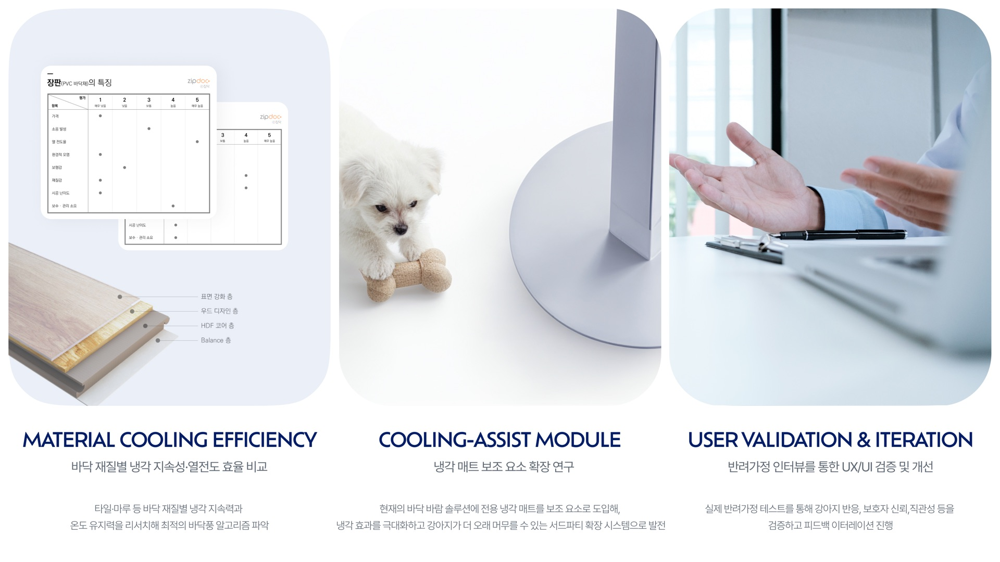

CREDITS
Project — COMONG
Team — IDEO TEAM 6
Industrial Designer — 정민서 Jung Minseo (PL)
UXUI Designer — 이일여 Lee Ilyeo
BX Designer — 장유진 Jang Yujin · 최완혁 Choi Wanhyeok
Special Thanks to — 김혜주 Heeju Kim · 강영은 Youngeun O. Kang
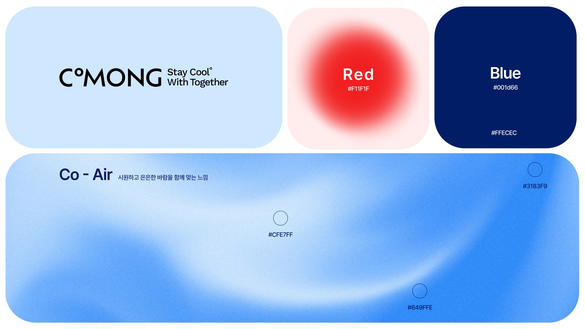
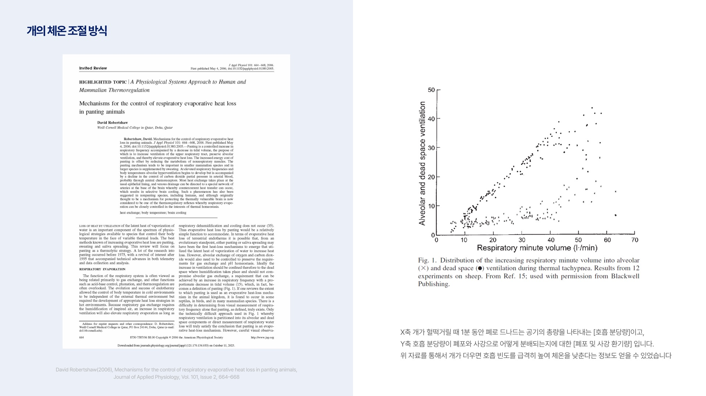
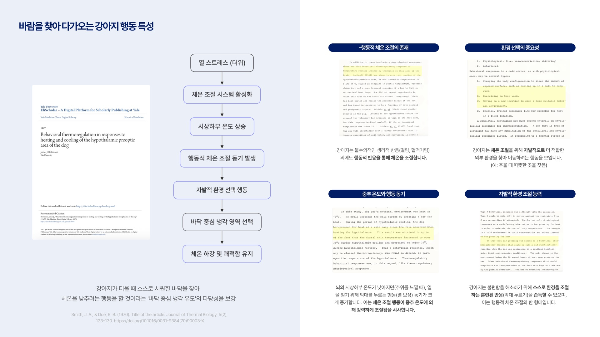
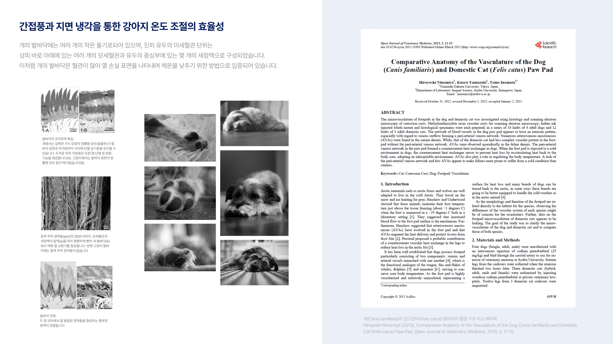
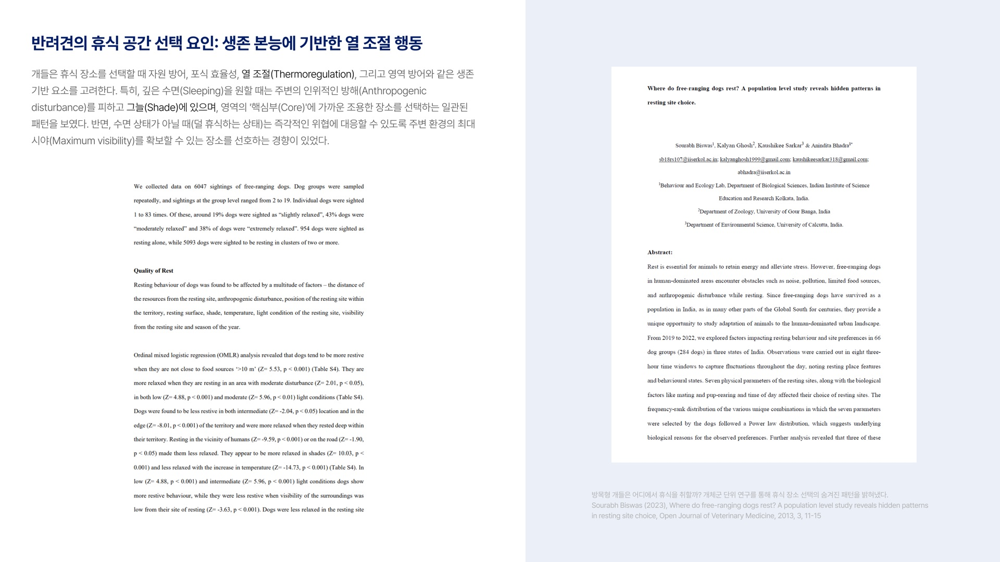